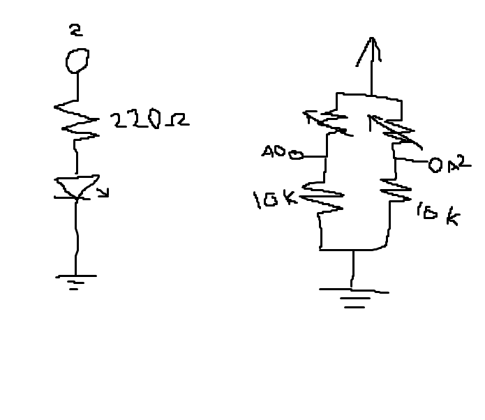
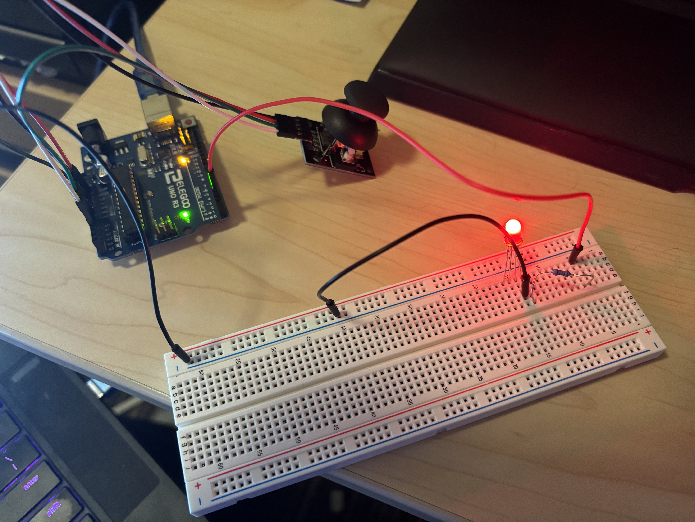

Sam Roberts' Assignment 6: Talking to the Web!

This is the schematic for the circuit. The schematic has two distinct parts. The left is the output for
interacting with the computer screen, and the right is the input for affecting what is shown on
the screen. The left is an LED controlled by pin 2, it is writed in series with a 220 ohm resistor
to limit the current to around 20 mA. Red LED means (5 - 1.8)/0.02 = 160, so a 220 will always keep
the current below 20 mA. The right shows the joystick, which uses to potentiometers to measure
the x and y direction. Since the varible resistor can go from 0 to 10K ohms, the second resistor
can go from 0 to 50% of the total resistance, so the A0 or A2 ports will typically read values from
512 to 1023, but calibration is used to get a more precises mapping. The potentiometers are grounded
together and serperatly from the LED.
Below is an image of the circuit.

The circuit is divided up into two main parts, the LED, which serves as the output for interacting with
the computer screen, and the Joystick, which serves as an input device for manipulating what is
displayed on the screen. The LED is wrired in line with a resistor to limit the current. The Joystick
is plugged directly into power and ground, with A0 wired to X movements and A2 wrired to Y.
Arduino Code:
int x_input = 0; // Valuve from X axis to be sent to computer
int y_input = 0; // Valuve from Y axis to be sent to computer
int senVal = 0; // Value read from sensor
int senMax = 0; // Max value from calibration
int senMin = 1023; // Min value from calibration
int computer_input = 0; // Input from computer, 0 is LED OFF and 1 is ON
void setup() {
// put your setup code here, to run once:
Serial.begin(9600); // Start Serial
pinMode(2, OUTPUT); // Set pin 2 to Output
while (millis() < 5000) { // For first 5 seconds after bootup
senVal = analogRead(A0); // Read X value from joystick
if (senVal > senMax) { // If read valuse is greater than current max
senMax = senVal; // Set max to current value
}
if (senVal < senMin) { // If read valuse is less than current min
senMin = senVal; // Set min to current value
}
}
}
void loop() {
// put your main code here, to run repeatedly:
x_input = analogRead(A0); // Read x values from joystick
x_input = map(x_input, senMin, senMax, -90, 90); // map to values for computer using calibration data
x_input = constrain(x_input, -90, 90); // constrain
y_input = analogRead(A2); // Read y values from joystick
y_input = map(y_input, senMin, senMax, 50, 150); // map to values for computer using calibration data
y_input = constrain(y_input, 50, 150); // constrain
Serial.println((String(x_input) + "," + String(y_input))); // Send x and y inputs to computer
computer_input = Serial.read(); // Read serial input from computer
if (computer_input == 0) { // If sent signal is 0
digitalWrite(2, LOW); // Turn off LED
} else { // Sent signal is 1
digitalWrite(2, HIGH); // Turn on LED
}
delay(50); // Delay 50 milliseconds
}
p5js Code:
const BAUD_RATE = 9600; // This should match the baud rate in your Arduino sketch
let port, connectBtn; // Declare global variables
let value = 0; // Declare value sent to Arduino
function setup() {
setupSerial(); // Run our serial setup function (below)
// Create a canvas that is the size of our browser window.
// windowWidth and windowHeight are p5 variables
createCanvas(windowWidth, windowHeight);
}
function draw() {
const portIsOpen = checkPort(); // Check whether the port is open (see checkPort function below)
if (!portIsOpen) return; // If the port is not open, exit the draw loop
let str = port.readUntil("\n"); // Read from the port until the newline
if (str.length == 0) return; // If we didn't read anything, return.
let arr = str.trim().split(","); // Split input into list of values sent
translate(windowWidth / 2, windowHeight / 2); // Move center of canvas to center of screen
background(244, 248, 252); // light blue background
angleMode(DEGREES); // Set angle to degrees
rotate(int(arr[0])); // Rotate shapes by first value in input list
triangle(-1 * float(arr[1]), 0, 1 * float(arr[1]), 0, 0, -1.5 * float(arr[1])); // Draw a trangle scaled tp second value in input list
circle(0, 0, 2 * float(arr[1])); // Draw a circle scaled to second value in input list
port.write(value) // Write the currnent value to the arduino
}
// Three helper functions for managing the serial connection.
function setupSerial() {
port = createSerial();
// Check to see if there are any ports we have used previously
let usedPorts = usedSerialPorts();
if (usedPorts.length > 0) {
// If there are ports we've used, open the first one
port.open(usedPorts[0], BAUD_RATE);
}
// create a connect button
connectBtn = createButton("Connect to Arduino");
connectBtn.position(5, 5); // Position the button in the top left of the screen.
connectBtn.mouseClicked(onConnectButtonClicked); // When the button is clicked, run the onConnectButtonClicked function
}
function checkPort() {
if (!port.opened()) {
// If the port is not open, change button text
connectBtn.html("Connect to Arduino");
// Set background to gray
background("gray");
return false;
} else {
// Otherwise we are connected
connectBtn.html("Disconnect");
return true;
}
}
function onConnectButtonClicked() {
// When the connect button is clicked
if (!port.opened()) {
// If the port is not opened, we open it
port.open(BAUD_RATE);
} else {
// Otherwise, we close it!
port.close();
}
}
function mouseClicked() { // Runs when the mouse is clicked
if (value === 0) { // If value is 0
value = 1; // Set to 1
} else { // Value is 1
value = 0; // Set to 0
}
}
 Final Circuit in action!
Final Circuit in action!